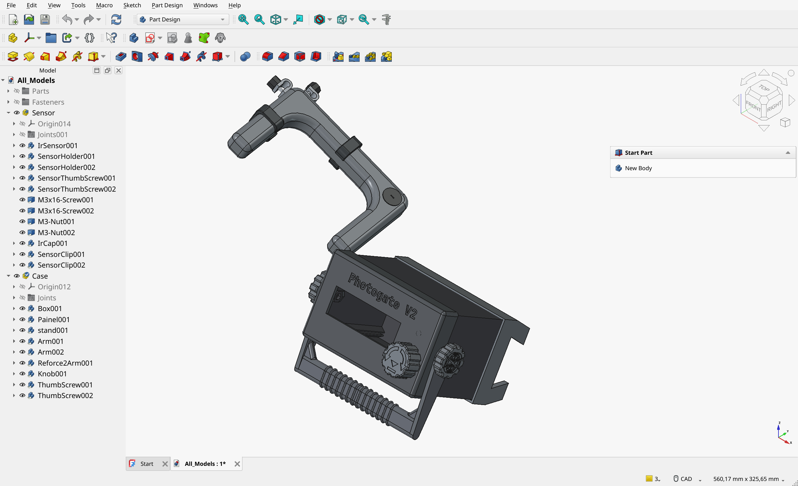

3D Modeling and Mechanical Design
The mechanical design was made in FreeCAD as a single editable assembly. This keeps the case, arm, sensor holder, clips, knobs, stand, fasteners, and electronics references in one place while the design is adjusted for printing and assembly.
FreeCAD Assembly
Main Model
3DModels/All_Models.FCStdcontains the editable mechanical model.- The assembly documents the relationship between case, display opening, encoder, board, arm, and sensor holder.
- Parts can be adapted before exporting to printing formats such as STL or 3MF.
Design Intent
- Keep the optical sensor aligned with the measurement path.
- Make the controls visible and accessible for classroom use.
- Reduce support material where practical for easier printing.
- Use M3 screws, nuts, and inserts for repeatable assembly.

Interactive 3D Preview
The browser preview allows quick inspection of the case model without opening CAD software.
Mechanical Notes
Printing
The case parts were modeled for practical 3D printing. Most parts can be printed in common materials such as PLA, PETG, or ABS, while flexible parts can benefit from TPU when elasticity is useful.
Assembly
The model uses M3 hardware for repeatable assembly. The CAD file is the preferred reference for checking how screws, inserts, and printed parts fit together.